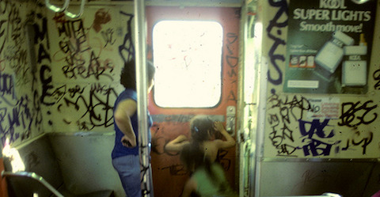
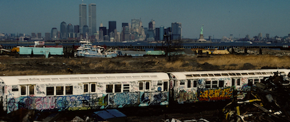
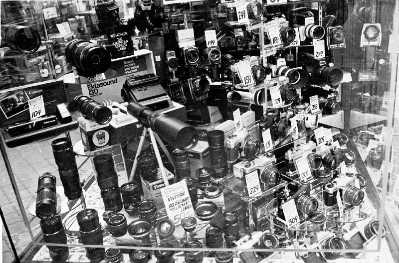

Times Square, New Year’s Eve, 1939.


The area soon to become Liberty State Park, in the 70s.
Times Square, New Year’s Eve, 1939.
The area soon to become Liberty State Park, in the 70s.




Photos of the New York City Subway During the 1980s by Steven Siegel
Debbie Harry and her sister, before a Palladium concert in NYC, 1978.

NYC BMT 1978

60th and Third Avenue


New York City, 1970-73 © Camilo Jose Vergara

NYC camera store in the 70s. The dawn of the grey market.

Brooklyn, during the 1977 blackout. No store was spared.

Grand Central Station, April, 1940, photo by Jerry Cooke/Corbis

West End Ave, at 79th Street, 1979, facing north.

Detail of the construction of Twin Towers of World Trade Center. Midtown Manhattan with the Empire State Building appears on background. Fall 1970.
Photo: New York Daily News
A construction worker poses on one of the top floors of the World Trade Center. (vía New York City skyscrapers under construction - World Trade Center, 1970)
Orchard and Delancey, 1970s. Williamsburg Bridge in the background.
U.S. Lunch Hour
Schrafft’s expansive 5th Ave. lunch counter jammed w. patrons during a busy lunch hour.
Location: New York, NY, US
Date taken: December 1954
Photographer: Alfred Eisenstaedt


An ode to Optimo Cigars – NYC’s best chain of newsstands, featuring tobacco products, candy, and even occasionally video games.

Not sure when or where this is, exactly, but it’s definitely vintage NYC!

Mickey Spillane outside of the Emerald Tavern. Columbus Avenue, between 69th and 70th.


Old school graffiti, 1973 Times Square station.

Madonna on the roof of Kate Simon’s studio on West 58th Street, New York, 1983

Seaport Diner, 1970s NYC. Yum?

Chinatown, 1970s.

47th Street - New York - 1957 - photograph by André Robé on We Heart It
http://weheartit.com/entry/89639821/via/medicinalmalaya

Le MoMA et la charrette du marchand de plantes New York, 1961 – Lucien Clergue
Ed Koch at a James Taylor concert in Central Park (Sheep Meadow), in 1977.

1 Train, 1983 pulling into Dyckman Street.
Cromag, 1992, Bronx.
693 8th Avenue, between West 43rd and West 44th Streets
Site of the Cameo Theater and the second location of the Adonis
Photo by Carl Burton
Tudor City, 1931.

View of the Brooklyn Bridge (circa 1920s)
Click here to view the image in our Digital Archives.
New York only blog!

Love blossoms at Coney Island, 1940s.

Newspaper ad for NYC neon sign manufacturing, 1950.
That’s a lot of fonts.

Times Square, 1910.
Newsstand, 32nd Street and Third Avenue, Manhattan. (November 19, 1935). NYPL Digital Gallery.